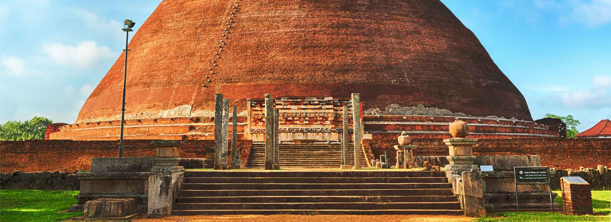

An architectural wonder of the ancient world, standing as the third-tallest structure in the world at the time of its completion.
Built by King Mahasen in the 3rd century AD, Jetavanaramaya was originally 122 meters (400 feet) tall, making it the tallest stupa ever built and the third-tallest structure in the ancient world after the Great Pyramids of Giza. It is constructed from over 93 million baked bricks.
The stupa is part of the Jetavana monastery complex and represents the ancient wisdom and engineering capabilities of the Sri Lankan people. Even in its restored form, its massive brick dome is a testament to the scale of ancient Buddhist civilization.
Back to Anuradhapura Hub